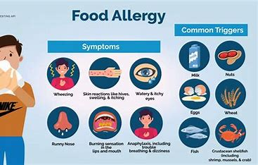

Food Resources
At UMSI, we believe in supporting our students' well-being, including providing access to nutritious food. Explore the resources below to find food support options available to you on and off-campus.
On-Campus Dining
Michigan Dining is comprised of twelve on-campus cafés and seven markets, seven residential dining halls, the Michigan Bakery and the Michigan Catering unit. Our emphasis is on creative, healthy and nutritious foods, international cuisines and sustainability throughout all dining operations.
Allergen Incident Report
Please use this form to report if you or someone you know has experienced an allergen incident from dining on campus. Please provide as much detail as possible so that we can follow up and investigate the incident and take actionable measures to prevent future incidents.
Allergen Incident ReportCommunity Food Resources
There are also many community organizations and food banks offering support. These resources are available to all students and residents, providing food items, fresh produce, and essential supplies.